Welcome to the SOC
What a Security Operations Center really is, who works in it, and the mental model of a SIEM — before you ever touch one.
Today's agenda
| Block | Topic | Time |
|---|---|---|
| 1 | What a SOC is, and where it sits in the company | 50 min |
| 2 | Your team and your tier | 45 min |
| 3 | The five core SOC functions | 30 min |
| — | Break | 15 min |
| 4 | Why a SIEM exists — five problems it solves | 35 min |
| 5 | What a SIEM is, and how correlation works | 45 min |
| 6 | Agent, manager, and a first look at rules | 30 min |
| 7 | Wrap-up, knowledge check, homework | 20 min |
CCNA-level networking, CEH-level security concepts, Windows Server and Linux fundamentals. We build on those — we do not repeat them.
What You Will Be Able To Do
Six things you could not do this morning.
- Explain what a SOC is, the services it provides, and the four pillars it stands on.
- Place the SOC inside the company: who the CISO is, and what the Red, GRC and Blue teams do.
- Describe the five core SOC functions in order, and what each one produces.
- Identify the responsibilities of Tier 1, Tier 2 and Tier 3 — and say which alerts belong to which.
- Justify why a SIEM is necessary, using five concrete problems it solves.
- Locate where log parsing happens and where detection rules live.
If you can explain today's content to a friend who is not in security, you understood it. If you can only repeat the words, you memorized it. Aim for the first.
The Breach Nobody Saw
A pattern repeated in breach report after breach report.
Open any security news site today. Big companies breached, ransomware groups running campaigns, new vulnerabilities appearing. Every one of those headlines was somebody's workplace.
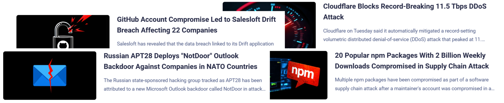
The story
A company is compromised in January. The attacker steals credentials, moves quietly between servers, and copies customer data out over several months. In July, a partner company calls to say the data is for sale online. That phone call is how the company learns it was breached.
Here is the uncomfortable part: the logs existed the whole time. The failed logins were recorded. The strange outbound traffic was recorded. Nobody was watching, nobody had connected the sources together, and no rule was written to notice the pattern.
Attacks are rarely invisible. They are usually just unwatched. A SOC exists so that somebody is watching, with the right tools, all the time.
Discussion
Which failed first here — the technology, the people, or the process? Defend your answer.
What Is a SOC?
The team, the mission, and the four things it stands on.
Why it exists
Attacks do not wait for business hours. Somebody has to be watching at 3 AM on a Friday. The SOC is the organization's first line of defense and the nerve center for everything security.
The four pillars
| Pillar | What it means | If it is missing |
|---|---|---|
| People | Skilled analysts, organized in tiers | Tools produce alerts nobody understands |
| Processes | Defined workflows so incidents are handled the same way every time | Every incident becomes improvisation |
| Technology | SIEM, EDR, IDS/IPS — detection at scale | The team is blind |
| Intelligence | Current knowledge of attacker methods and indicators | You only catch yesterday's attacks |
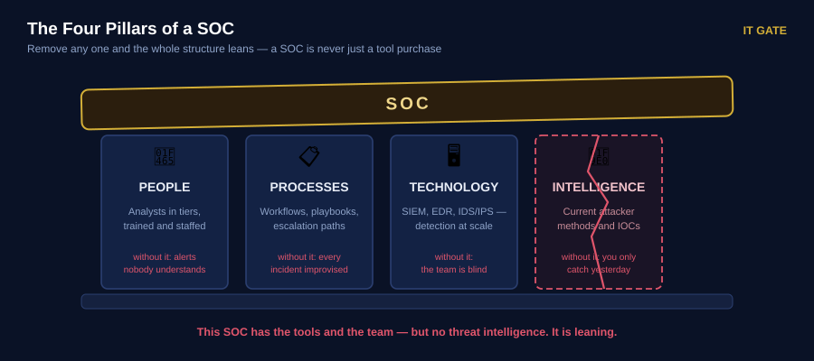
What a SOC delivers
Six services, split by whether they happen before or after something bad is detected:
| Reactive — after detection | Proactive — before any sign |
|---|---|
| Alert handling & triage | Threat intelligence |
| Incident response & analysis | Threat hunting |
| Digital forensics | Network security monitoring |
| Malware analysis | Baseline & policy management |
Believing a SOC equals a SIEM. Companies buy an expensive platform, forward almost nothing into it, hire nobody to watch it — and believe they are protected.
Module 1 · lesson 1.1
Where the SOC Sits in the Company
Who you report to, and who works beside you.
The CEO cares about the business, not about firewall rules. So companies hire a CISO — Chief Information Security Officer — who understands the business and builds the security departments underneath.
The three security departments
| Team | What they do | Simple version |
|---|---|---|
| Red Team | Offensive security — pentesters and ethical hackers looking for weaknesses | They attack us, on purpose |
| GRC Team | Governance, Risk & Compliance — policies and regulations (PCI-DSS, ISO 27001) | They keep us legal |
| Blue Team | Defensive security — SOC analysts, engineers, incident responders | This is you |
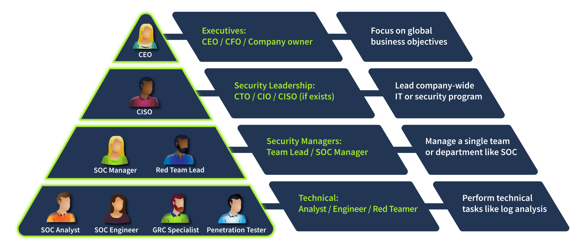
Inside the Blue Team
- SOC — the central hub, first line of defense, handles most alerts and attacks. You start here.
- CIRT / CSIRT — the "firefighters" called when an incident goes beyond SOC capacity. (INE calls these CSIRT, CERT or SIRT — we cover the naming properly in Session 6.)
- Specialist roles — Digital Forensics Analyst, Threat Intelligence Analyst, AppSec Engineer.
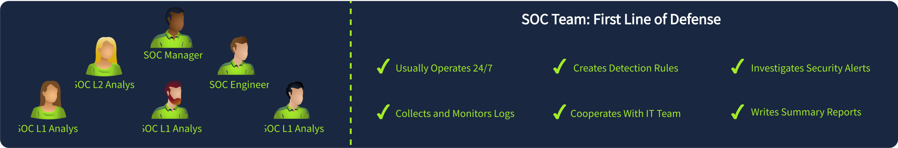
Two kinds of SOC you might work in
| Internal SOC | MSSP (outsourced) | |
|---|---|---|
| You protect | One company — your employer | Many customers at once |
| Pace | Calmer shifts | Shift starts with a queue of urgent alerts |
| Tools | A few tools, known deeply | Many different platforms |
| Experience gained | Maybe two real attacks a year | Attacks every week |
An MSSP is high pressure but a fast way to gain experience. Both are good first jobs. INE's full model comparison — in-house, managed, hybrid — comes in Session 6.
Module 1 · lesson 1.2
Meet Your Team — The SOC Ladder
Alerts climb the ladder. Expertise climbs down it. Here is every rung, and who stands beside it.
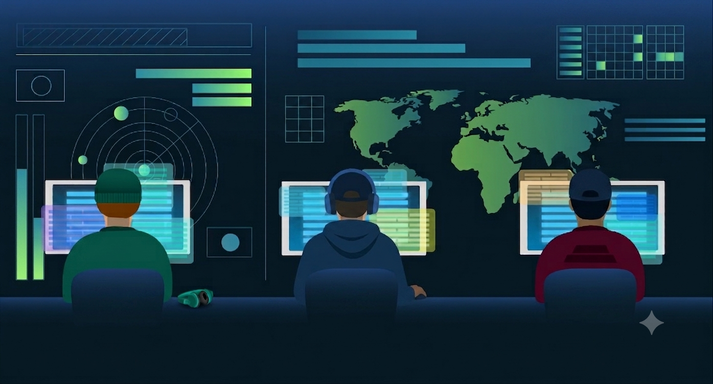
SOC Analyst
Monitoring & triage · works shifts · the first line of defense
- Watches the alert queue as alerts arrive
- Decides: real threat or false positive?
- Assigns severity and documents the finding
- Escalates anything beyond their level — with evidence
- Performs simple actions: block an IP, disable an account
Incident Responder / Senior Analyst IR lives here
Investigation & containment · takes what Tier 1 escalates
- Investigates the full picture: how did they get in, what did they touch?
- Scopes the incident — which hosts and accounts are affected?
- Contains the threat: isolate hosts, block C2, reset credentials
- Performs deeper log and endpoint analysis
- Writes the incident report and hands remediation to IT
"Incident Responder" is a Tier 2 job title, not a separate department. In small SOCs the same person is the senior analyst and the responder. In large organizations a dedicated CIRT/CSIRT takes over the biggest incidents.
Threat Hunter / Lead Analyst
Proactive hunting & detection engineering
- Hunts for threats that never raised an alert — hypothesis-driven, not queue-driven
- Reverse-engineers malware and analyzes advanced attacks
- Writes the detection rules that become Tier 1's alerts tomorrow
- Leads response on the most severe incidents
- Runs purple-team exercises with the Red Team
SOC Manager
People, metrics and the business relationship
- Owns staffing, shift rotas and training
- Reports SOC performance upward: MTTD, MTTR, alert volumes, incidents handled
- Decides priorities and approves major response actions
- Is the bridge between the SOC and the CISO
Beside the ladder — the roles that keep it standing
These people do not work the alert queue, but your daily work depends on them.
SOC Engineer no shifts
Makes the tools produce good alerts
- Onboards new log sources into the SIEM — this is why you can see a system at all
- Builds and tunes detection rules; reduces false positives you report
- Integrates tools together: SIEM ↔ EDR ↔ ticketing ↔ threat intel
- Builds dashboards, automation and SOAR playbooks
You talk to them when: a rule is too noisy, or a log source stopped arriving.
SOC Administrator / Platform Admin
Keeps the platform itself healthy
- Installs, upgrades and patches the SIEM and security tools
- Manages licences, storage, indexes and data retention
- Manages user accounts, roles and access to the platform
- Watches platform health — if ingestion stops, they fix it
- Handles backups and disaster recovery of the SOC systems
Engineer vs admin: the engineer decides what the SIEM should detect; the admin keeps the SIEM alive. In small teams one person does both.
Called in when a case needs them
- Threat Intelligence Analyst — supplies IOCs, actor profiles and campaign context that enrich your alerts
- Digital Forensics Analyst — acquires and analyzes memory and disk evidence (Sessions 9–10)
- Malware Analyst — determines what a suspicious file actually does
- CIRT / CSIRT — the "firefighters" for incidents beyond SOC capacity
- Red Team — attacks the company on purpose to test whether you notice
- GRC — compliance and policy; involved when an incident is reportable
Notice who is not triaging alerts: the engineer builds the rules, the admin keeps the platform alive, the manager reports upward, the specialists wait to be called. The daily alert work is yours. That is the job you are training for.
Module 1 · lesson 1.2 — SOC structure, roles and responsibilities
The Five Core Functions
This pipeline is the map for the entire diploma.
| Function | Question it answers | Output | We build it in |
|---|---|---|---|
| 1 · Collection | Can we even see what happens? | Centralized, structured logs | Sessions 2–3 |
| 2 · Detection | Does anything here look wrong? | Alerts with context | Session 4 |
| 3 · Triage | Is this real, and how bad? | Prioritized alerts, escalations | Session 5 |
| 4 · Investigation | What happened, and how far? | Scope, root cause, timeline | Sessions 7–8 |
| 5 · Response | How do we stop it and recover? | Contained, cleaned systems | Sessions 6, 9–10 |
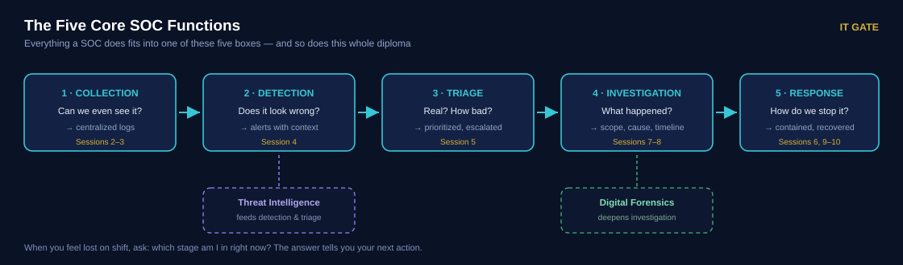
Keep this pipeline in your head. When you feel lost during a busy shift, ask yourself: "which stage am I in right now?" The answer tells you what your next action should be.
Module 1 · lessons 1.1 / 1.3
Tiers and Roles — Where You Fit
Alerts flow upward. Expertise flows downward.
| Tier | Main job | A typical day |
|---|---|---|
| Tier 1 SOC Analyst |
Monitor alerts, triage, escalate | Works the alert queue: real or false positive? How severe? Escalate or close? |
| Tier 2 Incident Responder |
Investigate, contain, mitigate | Takes escalations: how did they get in, what did they touch, how do we stop it? |
| Tier 3 Threat Hunter |
Hunt, reverse engineer, build detections | Searches for what nobody alerted on; writes the rules that become Tier 1's alerts |
INE uses Tier 1 / 2 / 3 — that is the exam answer. Many companies say "L1 / L2" instead and treat engineers and managers as separate roles rather than tiers. Same structure, different words.
Your daily duties as Tier 1
- Monitor and investigate security alerts
- Filter out false positives and classify what is left
- Escalate confirmed threats with clear documentation
- Cooperate with IT and other teams
- Keep learning — attacks change constantly
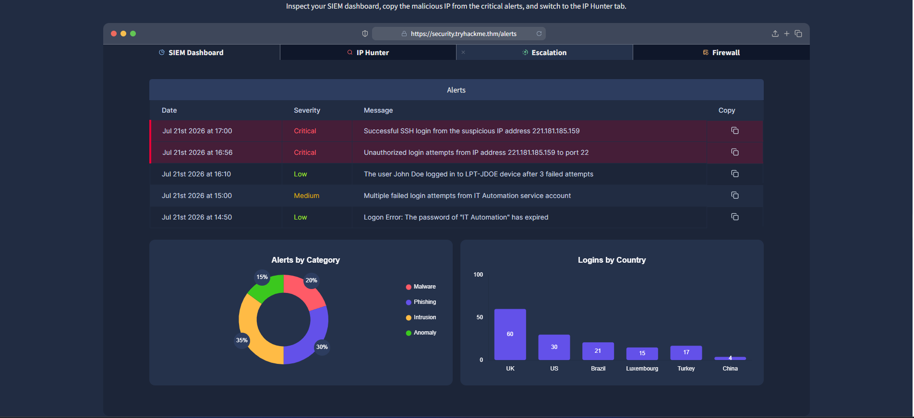
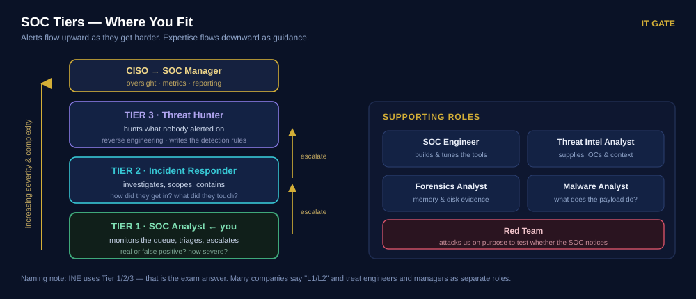
New analysts escalate everything (creating noise) or close things too confidently (missing real attacks). Both come from weak triage discipline — exactly what Session 5 fixes.
Module 1 · lesson 1.2
Activity — You Are the CISO
Groups of two or three. Assign the right people to each incident.
Seven incidents are happening at the same time in your company. For each one, decide which role handles it first and who else must be involved.
| # | Incident | Who leads? |
|---|---|---|
| 1 | An alert fires: 30 failed logins on one account in two minutes | |
| 2 | Ransomware is encrypting files on three servers right now | |
| 3 | A laptop must be analyzed for deleted files after an employee resigns | |
| 4 | A new SIEM rule keeps firing on normal admin activity | |
| 5 | A report says a threat group is targeting our industry this month | |
| 6 | Management asks how many incidents we handled last quarter | |
| 7 | A regulator asks whether we comply with PCI-DSS |
Show suggested answers
1 · Tier 1 analyst (triage) — escalate if a success follows. 2 · Incident Responder / CIRT, with the SOC supporting. 3 · Digital Forensics analyst. 4 · SOC Engineer (rule tuning). 5 · Threat Intelligence analyst. 6 · SOC Manager (metrics). 7 · GRC team — not the SOC at all.
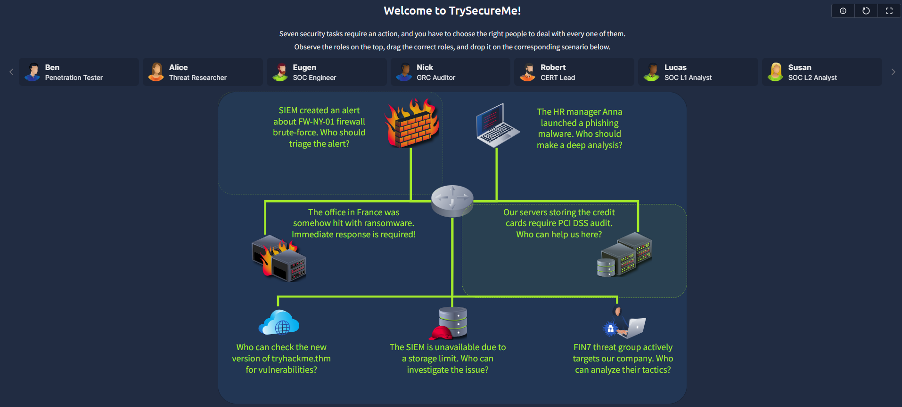
Only two of the seven belong to a Tier 1 analyst. Knowing what is not your job is as valuable as knowing what is.
Knowledge Check — First Half
Some are multiple choice — click your answer. Others need you to think first, then reveal.
Q1 Which of these is not one of the four pillars of a SOC?
- Processes
- Intelligence
- Budget
- People
Q2 Put these in the correct order: Triage · Response · Collection · Investigation · Detection
Show answer
Collection → Detection → Triage → Investigation → Response.
Q3 A regulator asks whether the company complies with PCI-DSS. Which team owns that?
- Blue Team
- GRC Team
- Red Team
- SOC Tier 3
Q4 An alert fires: 15 failed logins followed by one success. Who handles it first?
- Tier 1 analyst
- Tier 3 threat hunter
- SOC Manager
- The CISO
Q5 A rule keeps firing on normal admin activity. Whose job is it to fix the rule?
- SOC Administrator
- Tier 1 analyst
- SOC Engineer
- Incident Responder
Q6 "Incident Responder" sits at which tier — and why does that surprise people?
Show answer
Tier 2. People assume it is a separate department, but in most SOCs the senior analyst who investigates escalations is the incident responder. A dedicated CIRT/CSIRT only appears in large organizations, for the biggest incidents.
Q7 Explain the difference between a SOC Engineer and a SOC Administrator.
Show answer
The engineer decides what the SIEM should detect — onboarding log sources, writing and tuning rules, building automation. The administrator keeps the platform alive — upgrades, licences, storage, accounts, backups. In a small team, one person does both.
Q8 Why is "we have a SIEM" not the same as "we are protected"?
Show answer
A SIEM only sees what is forwarded to it, only detects what its rules describe, and only helps if somebody acts on the alert. Technology is one pillar of four.
Break
Stand up, move, drink water. The timer runs while you do.
Break time
Press start when the break begins.
Your company has 200 machines. Each writes hundreds of log lines per second, in different formats, stored on the machine itself. How would you find one attacker in that?
Why We Need a SIEM — Five Problems
Understand the pain first. The solution then explains itself.
Every device in a network writes logs. Windows machines, Linux servers, firewalls, web servers, routers — all of them, constantly. Those logs are the trail of everything that happened. So why can't we just read them?
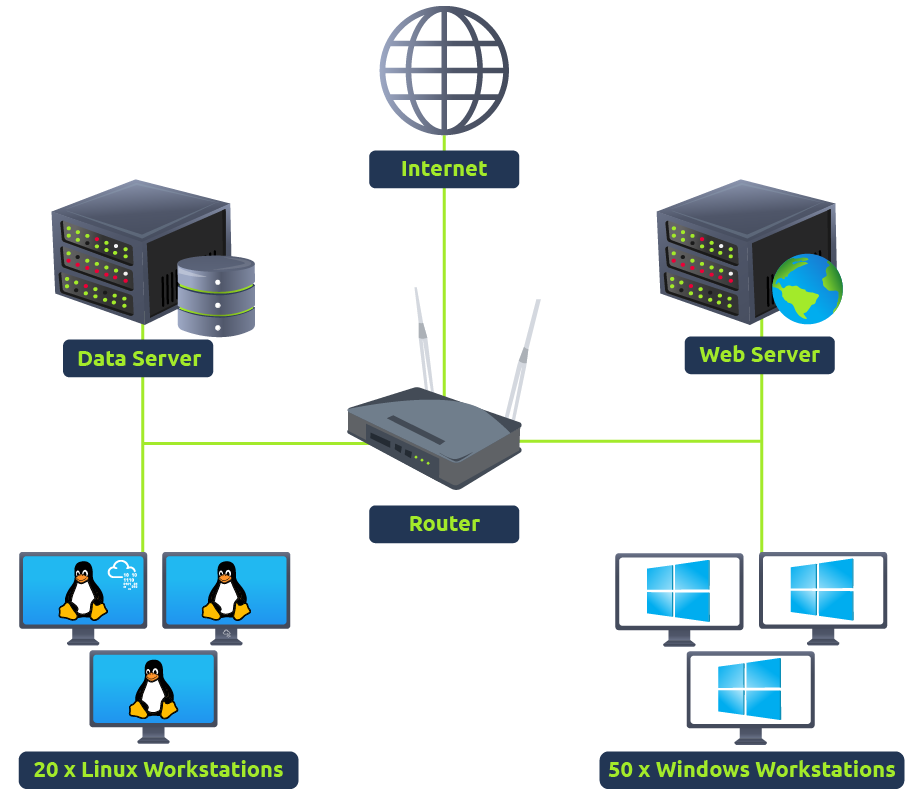
Two families of log source
| Host-centric | Network-centric |
|---|---|
| A user opening a file | An SSH connection |
| A login attempt | A file transferred over FTP |
| A process starting | Web traffic |
| A registry key changed | A VPN connection |
| PowerShell running | Network file sharing |
In Session 3 we expand this into INE's three categories: endpoint, network and application.
The five problems
| # | Problem | What it feels like on shift |
|---|---|---|
| 1 | Too many sources | Hundreds of events per second across dozens of machines |
| 2 | No centralization | You must SSH or RDP into each machine one at a time to read its logs |
| 3 | Limited context | One file access looks normal — until you know who opened it and how they got in |
| 4 | Limited analysis | No human can read millions of lines. You will miss things |
| 5 | Format chaos | Every device writes logs differently. You must learn them all |
This is exactly the situation in the breach story we opened with. The logs existed. They were scattered, unread, uncorrelated and in five different formats. That is not a people failure — it is a missing system.
Module 3 · lessons 3.2–3.4
What Is a SIEM?
The tool that solves all five problems at once.
The name explains the job
SIEM = SIM + SEM.
- SIM — Security Information Management: storing and searching historical logs.
- SEM — Security Event Management: real-time monitoring and alerting.
Two jobs at once: it remembers everything, and it shouts when something happens.
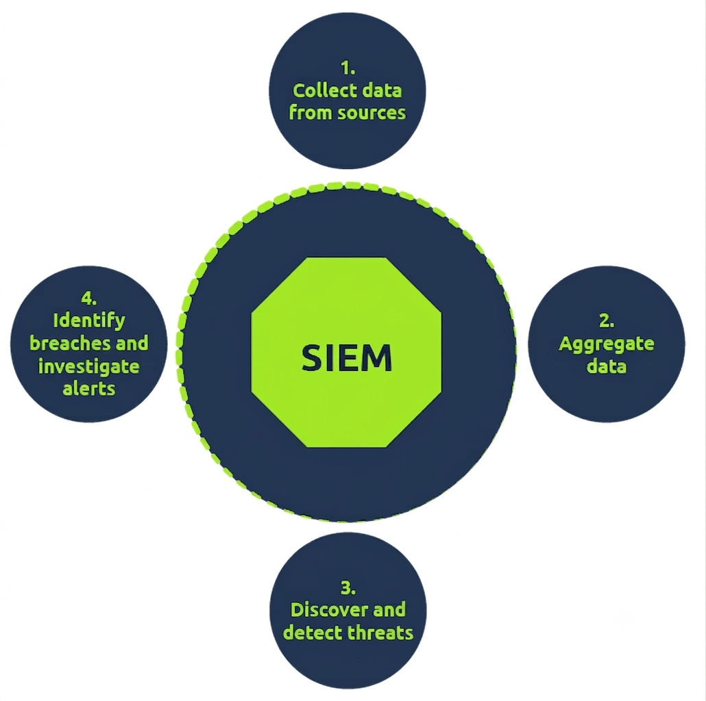
Five features, mapped to the five problems
| Feature | Solves | What it means |
|---|---|---|
| Centralized collection | Problems 1 & 2 | All logs arrive in one place through agents or APIs |
| Parsing & normalization | Problem 5 | Every log becomes fields in one consistent format |
| Correlation | Problem 3 | Related events across sources are connected into one story |
| Real-time alerting | Problem 4 | Rules watch continuously and notify you |
| Dashboards & reporting | Problem 4 | Millions of events summarized into something a human can read |
Parsing = breaking ONE log into fields (user, IP, time).
Normalization = making ALL sources use the SAME field names.
Parse first, then normalize. Without both, correlation is impossible.
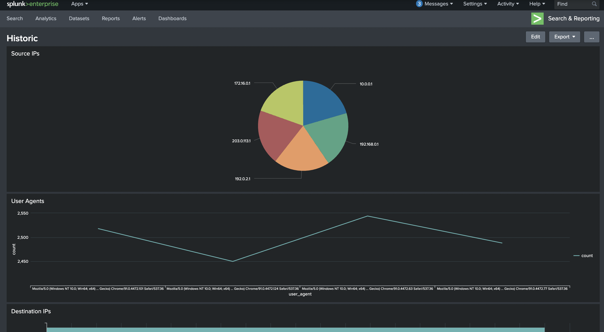
Module 1 · 1.4 and Module 3 · 3.5
Correlation in Action
Four harmless events. One serious incident.
Here are four things that happened on one account within five minutes. Look at each one alone, then look at them together.
| Time | Event | Alone, this is… |
|---|---|---|
| 09:14 | Ahmed logs in over VPN from an IP address he has never used before | Normal — people travel |
| 09:16 | Ahmed opens several documents on the finance shared drive | Normal — it is his job |
| 09:17 | A PowerShell script runs on Ahmed's machine | Normal — IT uses scripts |
| 09:19 | The machine makes a large outbound connection to an external server | Normal — cloud backup exists |
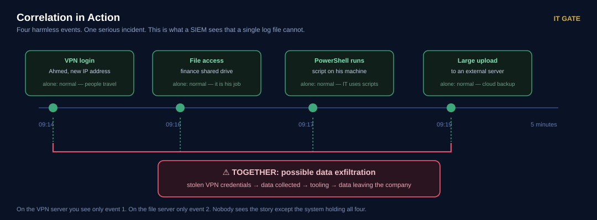
This is why a SIEM beats reading logs on the machine. On the VPN server you would only see event one. On the file server, only event two. Nobody sees the story except the system holding all four.
Judging an alert by the single event that triggered it. Always ask: what else happened around this — same user, same host, same five minutes?
Agent and Manager — Who Does What
Two halves of every SIEM. Confusing them costs hours of troubleshooting.
| Agent | Manager (SIEM server) | |
|---|---|---|
| Runs on | Every machine you want to watch | The central server |
| Job | Collect logs and prepare them | Store, index and analyze them |
| Holds | Collection and parsing configuration | Indexes and detection rules |
| You edit | Which logs to send, from where | What counts as suspicious |
| Example | Splunk Universal Forwarder, Wazuh agent | Splunk indexer, Wazuh manager |
The agent decides what is sent. The manager decides what is suspicious.
Four ways logs get in
| Method | How it works | Typical use |
|---|---|---|
| Agent / forwarder | Small program on the endpoint sends logs continuously | Windows and Linux endpoints — our Session 2 method |
| Syslog | Device sends log messages to a listening port | Firewalls, routers, network appliances |
| Manual upload | You upload a log file for analysis | Investigations, evidence packages, training |
| Port forwarding | SIEM listens on a port; endpoints push to it | Custom applications |

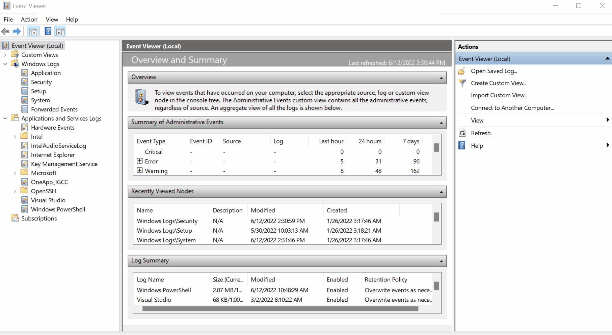
Spending hours editing rules on the server because "the logs are wrong", when the real problem is that the agent never sent that log source at all. Always ask first: is the data even arriving?
You install both halves yourself: a Splunk server and forwarders on two machines. Everything on this page becomes something you can touch.
A First Look at Detection Rules
Where alerts actually come from. You will write these in Session 4.
Two real examples
1 · Someone cleared the event log
Attackers delete logs to hide their tracks. Windows records this as Event ID 104.
IF log source = WinEventLog
AND EventID = 104
THEN alert "Event Log Cleared"2 · Someone ran whoami
After breaking in, attackers check which account they control. Process creation is Event ID 4688.
IF log source = WinEventLog
AND EventID = 4688
AND NewProcessName contains "whoami"
THEN alert "whoami Command Execution Detected"Look at what the rules depend on: field names — EventID, NewProcessName. If logs were not parsed into fields and normalized, no rule could be written. That is why those two words are worth remembering.
What happens after the alert
The Tier 1 analyst opens it, checks which conditions matched, and decides:
- False positive — tune the rule so it stops firing on normal activity
- True positive — investigate further
- Contact the asset owner to ask about the activity
- Confirmed malicious — isolate the host, block the IP, escalate to Tier 2
Notice the loop: a rule creates your alert, your investigation improves the rule. Tier 1 is not the end of the process — you feed it.
Module 3 · lesson 3.14
Knowledge Check — Second Half
Mixed formats again. Click the multiple choice, think through the rest.
Q1 SIEM stands for the combination of which two capabilities?
- Security Incident + Event Monitoring
- System Information + Endpoint Management
- Security Intelligence + Event Mitigation
- Security Information Management + Security Event Management
Q2 Where does parsing configuration live?
- On the SIEM server (manager)
- On the agent, on each machine
- In the firewall
- In the analyst's dashboard
Q3 In your own words: what is the difference between parsing and normalization?
Show answer
Parsing breaks ONE log into fields — user, IP, time. Normalization makes ALL log sources use the SAME field names and format. Parse first, then normalize. Without both, no rule can be written and no correlation is possible.
Q4 Four normal-looking events happen on one account in five minutes and become a single alert. Which SIEM feature did that?
- Normalization
- Indexing
- Correlation
- Dashboarding
Q5 Which Windows Event ID tells you somebody cleared the event log?
- 104
- 4625
- 4688
- 4624
Q6 Name three of the five problems that a SIEM solves.
Show answer
Too many sources · no centralization · limited context · limited analysis capacity · format chaos.
Q7 Your brute-force rule never fires, though you know logins are failing. What do you check first, and why?
Show answer
Whether the data is arriving at all — is the agent running, and is that log source in inputs.conf? Analysts waste hours editing rules on the server when the real problem is that the log never left the machine. Always confirm the data before blaming the rule.
Q8 Scenario: an alert says "suspicious PowerShell on FIN-PC-04". Describe your first three actions as a Tier 1 analyst.
Show answer
There is no single right answer, but a good one covers: (1) read the alert and confirm what triggered it — which rule, which command line; (2) check context — who is the user, is this machine important, have there been other alerts on it; (3) decide — false positive (close with a note), or escalate to Tier 2 with your evidence. We build this into a full workflow in Session 5.
Summary & Cheat Sheet
What we covered, then everything worth keeping on one card.
What we covered, in order
- What a SOC is — a central team watching everything, all the time.
- The four pillars — people, processes, technology, intelligence.
- Where the SOC sits — CISO over Red, GRC and Blue; you are Blue Team.
- The SOC ladder — T1 → T2 → T3 → Manager, with engineer, admin and specialists beside it.
- The five core functions — collect, detect, triage, investigate, respond.
- Why a SIEM exists — five real problems with scattered logs.
- What a SIEM is — SIM plus SEM; collect, parse, normalize, correlate, alert.
- Correlation — four innocent events that together mean exfiltration.
- Agent versus manager — who sends, and who decides.
- Detection rules — logical conditions over normalized fields.
📋 Session 1 Cheat Sheet
Core definitions
- SOC — central team that monitors, detects, analyzes and responds, 24/7
- SIEM — collects logs everywhere, connects them, alerts on rules
- SIEM = SIM + SEM — history + real time
- Agent — collects & parses on the machine
- Manager — stores, correlates, holds the rules
The four pillars
- People — analysts in tiers
- Processes — repeatable workflows
- Technology — SIEM, EDR, IDS/IPS
- Intelligence — current attacker knowledge
- All four, or the SOC leans
The five SOC functions
- 1 Collection → centralized logs
- 2 Detection → alerts with context
- 3 Triage → prioritized, escalated
- 4 Investigation → scope, cause, timeline
- 5 Response → contained, recovered
Who does what
- Tier 1 — monitors queue, triages, escalates
- Tier 2 — investigates, contains (= Incident Responder)
- Tier 3 — hunts, reverse engineers, writes rules
- Engineer — onboards sources, tunes detections
- Admin — keeps the platform alive
- Manager — metrics, staffing, reporting
Log pipeline
- Parsing — one log → fields
- Normalization — all sources → same format
- Correlation — related events → one story
- Ingestion: agent · syslog · manual upload · port forwarding
- Splunk forwarder ships to port
9997
Event IDs met today
- 4625 — failed logon
- 4624 — successful logon
- 4688 — process created
- 104 — event log cleared ⚠
- Linux:
/var/log/auth.log— "Failed password"
Five problems a SIEM solves
- Too many log sources
- No centralization
- Limited context
- Limited analysis capacity
- Format chaos
Company structure
- CEO → CISO
- Red Team — attacks to test
- GRC — policy & compliance
- Blue Team — defends (SOC, CIRT, specialists)
- Internal SOC vs MSSP — depth vs variety
Sentences worth memorizing
- "The agent decides what is sent. The manager decides what is suspicious."
- "No logs means no detection."
- "Attacks are rarely invisible — they are unwatched."
- "Check the data before blaming the rule."
Today everything was a concept. Next session you build it: your own lab, your own SIEM, your own logs flowing in. Every box in today's diagrams becomes a machine you control.
Key Takeaways
If you remember nothing else from today, remember these.
- A SOC monitors, detects, analyzes and responds — 24 hours a day.
- Four pillars: people, processes, technology, intelligence. All four or none.
- You are Blue Team. Red attacks to test us, GRC keeps us legal, Blue defends.
- The pipeline: collect → detect → triage → investigate → respond.
- Tier 1 triages, Tier 2 investigates, Tier 3 hunts and writes the rules.
- A SIEM exists because logs are scattered, unreadable, and too many.
- SIEM = SIM (history) + SEM (real time).
- Parsing = one log into fields. Normalization = all logs into one format.
- Correlation turns innocent events into an incident.
- The agent decides what is sent; the manager decides what is suspicious.
Homework
Mark each task done as you finish it, and add the deadlines to your calendar.
Prepare your laptop for the SOC lab
Required Due · 28 JulInstall VMware Workstation Pro, enable virtualization in BIOS/UEFI, and free at least 150 GB of SSD space. Follow Part 0 of the lab setup guide.
Without this you cannot participate in Session 2 — we start by building.
TryHackMe — Junior Security Analyst Intro
Required Due · 28 JulComplete every task, including the alert dashboard lab at the end. Watch how the analyst works the queue, and compare it with the tier table from today.
TryHackMe — Introduction to SIEM
Required Due · 28 JulComplete every task. Pay attention to where the agent sits in their diagrams, and to the five problems a SIEM solves — we covered both today.
Explain a SOC in five sentences
Required Due · 28 JulWrite five sentences explaining to a friend who knows nothing about IT what a SOC does and why it exists. No technical words allowed — no "SIEM", no "logs", no "alerts".
If you can do this, you understood today. If you cannot, re-read the summary page.
Go deeper — Blue Team roles and career path
Optional Due · 4 AugFor anyone who wants more: the THM room covers the security hierarchy and career paths, and includes the CISO role-matching challenge we did in class. The MITRE book is the reference every SOC manager has read.
Progress is saved in this browser. “Add all deadlines” downloads an .ics file that works with Outlook, Google Calendar and Apple Calendar. Tasks you create yourself are saved here too — use ✕ on a task to remove it.
A laptop that can run virtual machines, your five sentences, and your two TryHackMe answers.
References
Where today's material comes from, and where to read more.
Primary source — INE eCIR v2
| Topic | INE module & lesson |
|---|
Supporting labs — TryHackMe
- Junior Security Analyst Intro — Tier 1 daily routine, team roles, alert dashboard
- Introduction to SIEM — log sources, SIEM features, detection rules
- SOC Role in Blue Team — security hierarchy, Blue Team departments, career path
Diagrams and screenshots in this session marked "Capture: THM" are used for classroom teaching and credited to the rooms above. TryHackMe content remains their property.
Standards & further reading
- NIST SP 800-61r2 — Computer Security Incident Handling Guide
- MITRE — 11 Strategies of a World-Class Cybersecurity Operations Center
INE material is the primary reference for the eCIR exam. External labs reinforce it — where wording differs, INE's version is the one that counts.
Create a homework task
Add your own lab, reading or exercise to this session's homework list.
Links can be a THM room, a PDF in the session folder, a lab guide — anything with a URL.
Navigate with ← → arrow keys